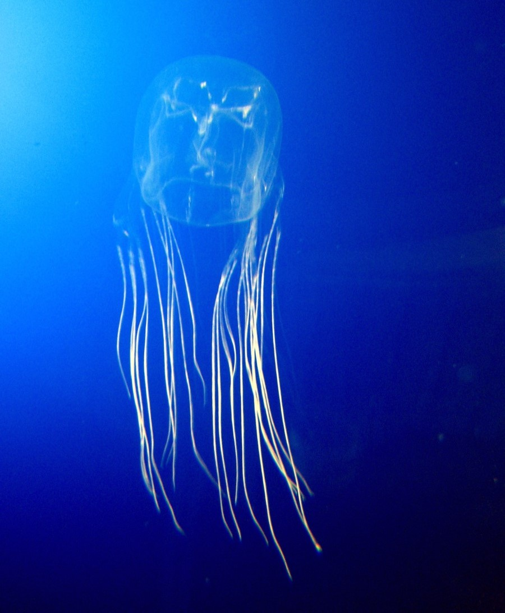

Die Seewespe ist eine Art von Würfelqualle, die in den Gewässern vor Australien und anderen Teilen des Indopazifiks beheimatet ist. Sie ist bekannt als eine der giftigsten Quallenarten der Welt und ihr Gift kann für den Menschen tödlich sein. Sie hat einen durchsichtigen Körper mit einem charakteristischen Würfelmuster und langen, giftigen Tentakeln, die sie zur Jagd auf Beute verwenden.
Die Seewespe
Im "Giu's Zoo" gibt es eine faszinierende Vielfalt an exotischen Tieren zu entdecken. Besucherinnen und Besucher haben hier die Möglichkeit, einige der gefährlichsten und gleichzeitig faszinierendsten Kreaturen unserer Erde hautnah zu erleben. Zu den Highlights des Zoos zählen der farbenfrohe Pfeilgiftfrosch, der Kugelfisch mit seinem einzigartigen Verteidigungsmechanismus, die tödliche Seewespe, die majestätische Kobra und der beeindruckende Stachelrochen. Jedes Tier hat seinen eigenen Lebensraum und seine eigene Geschichte, die es zu entdecken gilt. Ein Besuch im "Giu's Zoo" ist ein unvergessliches Erlebnis für alle, die sich für die Schönheit und Vielfalt der Tierwelt begeistern.


Seewespe
Lateinischer Name: Chironex fleckeri
Lebensraum: Küstengewässer im tropischen Indopazifik
Größe: Tentakel können bis zu 3 m lang werden
Gewicht: -
Ernährung: Kleine Fische und Krebstiere
Besonderheiten: Die Seewespe ist eine der giftigsten Quallenarten der Welt.
Ihr Nesselgift kann bei Menschen zu Atemlähmung, Herzstillstand und schließlich zum Tod führen.